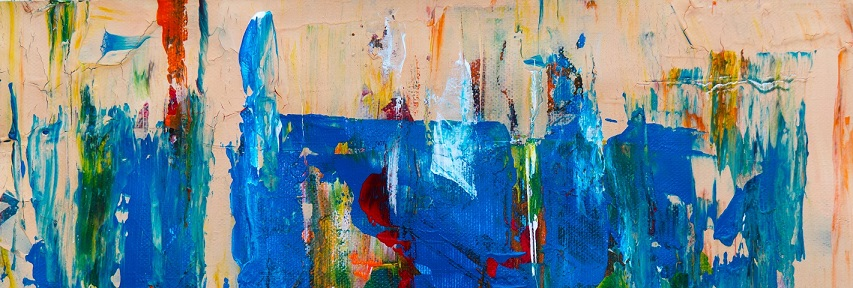

MISSIE
STARTPROjecten is een overkoepeling van organisaties die Brusselse jongeren, vroegtijdige schoolverlaters, langdurige werklozen, NEET jongeren
en werkzoekenden uit kansengroepen, professionele ondersteuning, begeleiding en coaching aanbieden op het vlak van stappen naar stage en werk,
en via informatica opleidingen, IT ondersteuning en het promoten van nieuwe technologieën een motor wil zijn voor deze doelgroepen m.b.t. ontwikkeling en tewerkstelling.
VISIE
STARTPROjecten biedt kwaliteitsvolle ondersteuning, begeleiding en coaching van Brusselse werkzoekenden en schoolverlaters naar stage en werk,
aansluitend bij de profilering en nood van het Brussels Hoofdstedelijk Gewest.
STARTPROjecten vormt de garantie tot volledige integratie van informatica in organisaties en scholen via ondersteuning van hun IT netwerken, IT materiaal,
opleidingen, workshops en trainingen.
STARTPROjecten, met zijn 20 jaar expertise van haar kaderpersoneel , is de eerste keus als partner en staat volledig ten dienste van het Brusselse werkveld .
STARTPROjecten is een inclusieve organisatie waarmee Brusselse jongeren, vroegtijdige schoolverlaters, langdurige werklozen, NEET jongeren,
werkzoekenden uit kansengroepen en partners zich identificeren.
WAARDEN
STARTPROjecten staat voor duurzaamheid in zijn werking en verdedigt de inclusiewaarden binnen een multiculturele samenleving.
STARTPROjecten staat voor het sterker maken van kansengroepen in hun deelname aan het sociaal leven en in hun stappen naar werk. Daarvoor verdedigen
wij het recht op opleiding en het verwerven van kennis, vaardigheden en competenties die nodig zijn in de 21ste eeuw.
STRATEGIE | Onze strategie voor de komende 3 jaar:
Om deze visie in de praktijk om te zetten, beschikt STARTPROjecten over een strategisch plan dat het mogelijk maakt doelstellingen en resultaatsindicatoren
voor de drie komende jaren op te volgen.
Ons strategisch plan bestaat uit 5 Strategische doelstelling verbonden met 5 Resultaatsgebieden:
- -- Strategische doelstelling & Resultaatsgebied 1: scholen ondersteunen in hun IT infrastructuur.
- -- Strategische doelstelling & Resultaatsgebied 2: de mogelijkheden om stage te lopen of te werken binnen de sociale economie, deeleconomie, werkervaringsprojecten
en invoegbedrijven in kaart brengen en stimuleren bij jongeren, schoolverlaters, kansengroepen en NEET jongeren. - -- Strategische doelstelling & Resultaatsgebied 3: een efficiënt netwerk opzetten om schoolverlaters stage en werk aan te bieden.
- -- Strategische doelstelling & Resultaatsgebied 4: ondersteuning van Brusselse jongeren zonder diploma, die stappen zetten naar de examencommissie (middenjury).
- -- Strategische doelstelling & Resultaatsgebied 5: het oprichten van een FabLab met accent op 3D printing, Virtual Reality en Robotprogrammatie en dit openstellen
voor scholen, jongeren, schoolverlaters, kansengroepen en NEET jongeren.
i.s.m. de vlaamse gemeenschapscommissie